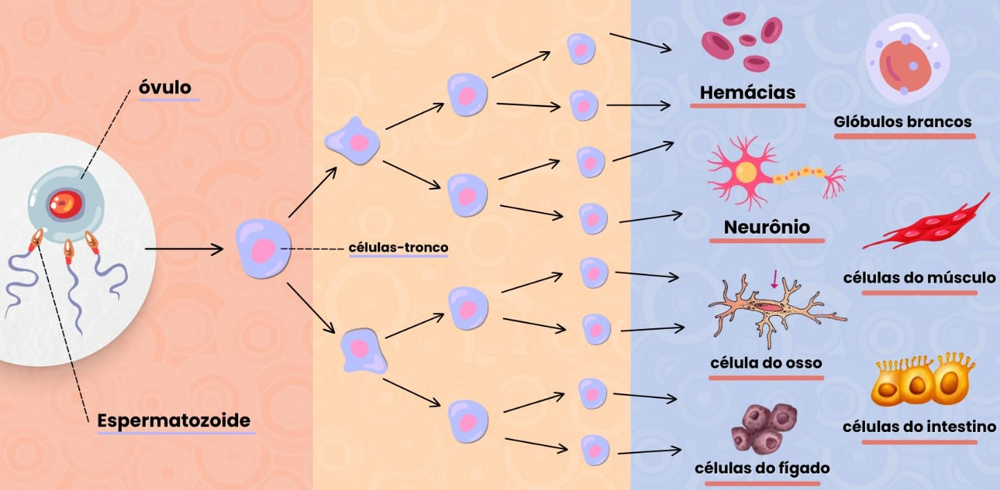
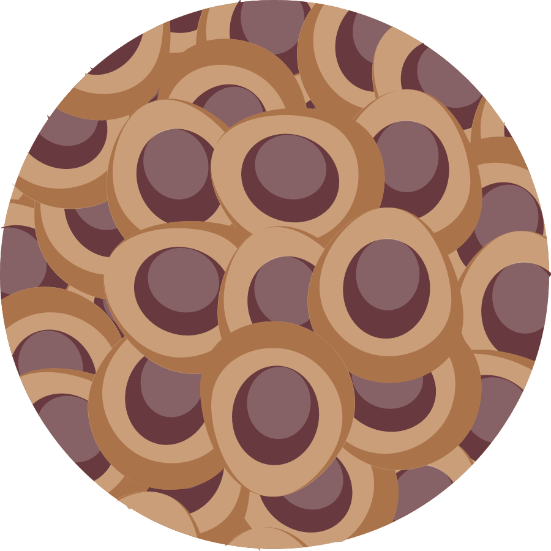
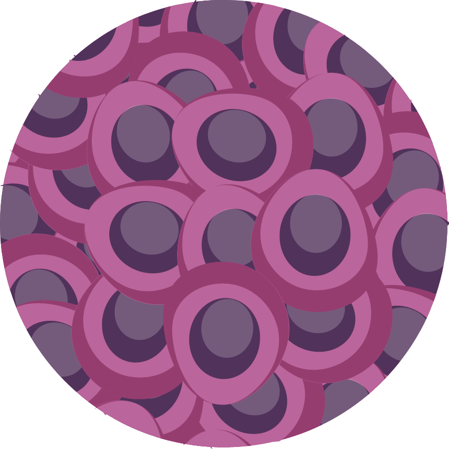

Tipos de Células Tronco
As células tronco são classificadas de acordo com diferentes critérios, como sua origem, capacidade de regeneração e capacidade de se transformar em diferentes tipos de células.

Clique na Imagem:

Embrionárias Totipotentes:
As células-tronco embrionárias, como o próprio nome diz, são aquelas encontradas nos embriões, aproximadamente 5 dias após a fecundação, e são divididas entre Totipotentes e Pluripotentes. As células-tronco totipotentes vêm do zigoto e têm o potencial de criar um organismo completo.Clique na Imagem:

Embrionárias Pluripotentes:
As células-tronco pluripotentes (também células embrionárias), vêm da massa interna do blastocisto e podem produzir todos os tecidos do organismo, exceto placenta e anexos embrionários.Clique na Imagem: